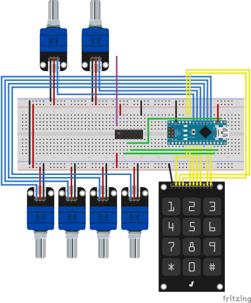
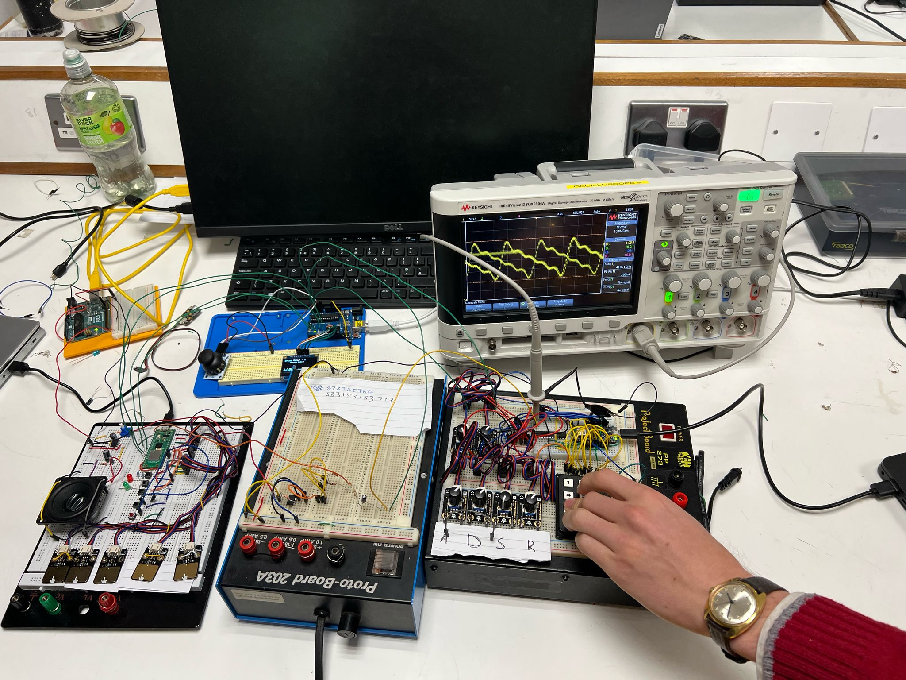
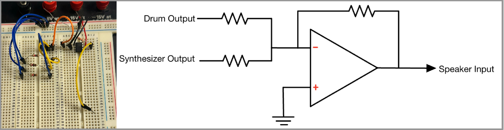

This DIY digital synthesizer and drum set project is perfect for any music enthusiast,
hacker, or programmers who are interested in digital signal processing (DSP), modern music production, electronics and programming.
Use an Arduino and Rasperry PI Pico (optional) to create your own DJ deck, complete with a synthesizer, effects (attack, delay, sustain, release)
, keyboard and drums. Develop some applied practical skills and add your own twists following along with this project!
"The most exciting phrase to hear in science, the one that heralds new discoveries, is not 'Eureka!' but 'That's funny...'" - Isaac Asimov
What you'll need:
Below is a table of the main parts you will need to create the basic elements of this project. Don't fret! If you do not have exactly resistors or capacitors, you can experiment with designing your own filters, etc.
Component
Quantity
Specifications
Purpose
Core Electronics
Arduino Nano 33 IOT
1
Or compatible microcontroller (Uno, etc.)
Main processor for the synthesizer
Raspberry PI Pico
1
Or compatible microcontroller
Main processor for drums and GUI
Breadboard
1
Full-size recommended, multiple may be helpful
For prototyping the circuit
Jumper Wires
20+
Various lengths, female connectors may be helpful
Connecting components
Keyboard/Input Components
Keypad
1
Alternatively use 8+ push buttons
Keyboard keys
Potentiometers
6
10kΩ linear
Parameter controls for keyboard (attack, sustain, release, etc.)
Pull-down Resistors
8+
10kΩ
For button debouncing (only necessary if you use push-buttons rathe than keypad)
The main goal of this project was to utilize an analogue
component with an embedded component to create a system that
functionally produces and processes audio signals for musical applications.
Our system integrates the envelope components of the synthesizer
with the touch pads of the drum set to create a model of a DJ set that
allows for real-time sound creation and manipulation. This project
demonstrates the use of practical applications in circuit design as well
as developing and processing audio signals for output, combining analog
signal conditioning with digital control systems.
Lesson 1: Play around with sound.
Originally we set out to make a vocoder for this project, but after much testing and consideration we decided to
pivot. Some of the elements we built however, remained useful. The first thing we built was an audio power amplifier,
so that we could experiment with playing different sounds through it, and how different filters would affect the audio.
You can try connecting the green wire to different types of input and playing with the volume controls.
LM386 IC: This integrated circuit amplifies the weak audio signal to a level that can drive a speaker.
500kΩ Potentiometer: This serves as our volume control, allowing us to adjust the amount of audio signal that reaches the amplifier. Turning this knob adjusts the amplitude of the output sound.
0.33μF Capacitor (Input): This capacitor blocks DC voltage while allowing AC audio signals to pass through, preventing DC offset from affecting the amplifier.
220μF Capacitor (Output): This large electrolytic capacitor couples the amplified audio signal to the speaker while blocking DC current.
8Ω Speaker: The final component in our chain converts the electrical signal from the amplifier into sound waves we can hear. The 8Ω impedance matches well with the LM386's output characteristics.
To experiment with the power amp, you can connect the input of the circuit to a PWM pin on an Arduino and use the "tone.h" library to play different frequencies.
Lesson 2: Tunable Polysynth with ADSR
Our goal in this lesson is to turn eight push‑buttons (or a tiny
telephone‑style keypad) into a two‑voice digital synthesizer
that feels surprisingly “analogue” thanks to a full ADSR envelope and
rich lookup‑table waveform. Everything runs on the Arduino Nano 33 IoT
driving an MCP4922 12‑bit DAC, filtered, then boosted by a modest
op‑amp/LM386 stage. When you finish this page you’ll be able to play
chords, tweak attack & release in real time, and hear clean,
artefact‑free notes through a speaker.

Controls at a glance
Pot A (Fine Tune) – shifts the whole scale up or
down about ±40 %. Great for quick pitch‑bend effects or matching other
instruments.
Pot B (Semitone) – nudges each note in 25‑cent
steps across ±3 semitones. Handy for temperament experiments.
Pot C (Attack) – how fast the note rises from
silence to full level (0.1 ms → 200 ms).
Pot D (Decay) – rate that the level slides down
to the sustain plateau (captured per note).
Pot E (Sustain) – steady volume while a key is
held (0 → 100 %). Also captured per note so later tweaks don’t affect
existing sustains.
Pot F (Release) – fall‑off time once the key is
released (0.1 ms → 200 ms).
The eight note buttons map to a one‑octave A‑major scale:
A4 → A5 (A, B, C♯, D, E, F♯, G♯, A).
Because we store the scale as offsets from A4, the synth can easily transpose.
Use the Oct ▲ and Oct ▼ buttons (pins A7
& A6) to shift the entire keyboard ±4 octaves.
Circuit overview
The Nano’s SPI bus clocks data into the MCP4922 at 8 MHz. We use only
channel A (12‑bit resolution). A simple RC low‑pass pulls the
stair‑stepped output down to audio‑bandwidth, and a unity‑gain
MAX417 buffers the line before it reaches the LM386 power amp.
Frequency pots (A0 & A1) feed 10‑bit ADC readings directly into the
firmware’s tuning maths, while four more pots land on A2–A5 for the
envelope knobs. Eight buttons on D2‑D9 trigger the note logic; two
extra buttons on A6/A7 bump the octave.
rich_lookup_table[256] – a pre‑cooked additive‑synthesis
waveform. 256 samples keeps the phase counter byte‑sized and speeds
table fetches.
struct Voice – holds everything per note:
phase / phaseIncrement – fractional 0‑255 counter that
indexes the table.
envState / envLevel – live ADSR state machine.
decayTarget & sustainLevel – captured from the pots
at note‑on so decay really isn’t tied to sustain.
updateEnvelope() – runs every sample. Key idea: during
DECAY we subtract env_decay until envLevel
hits decayTarget, then snap to
sustainLevel. RELEASE is a straight linear fall under
env_release.
generateAudio()
Calls updateEnvelope().
**Pitch math:** phase += phaseInc; if over 255,
wrap.
Weighted mix = 0.55 × voice0 + 0.45 × voice1. (Add 2048 to
recenter for the DAC.)
checkInputs() – polled every 100 ms.
Updates baseFreqMultiplier (fine tune) and
semitoneRatio from the pots.
Live‑tweaks Attack & Release rates.
Debounces 8 note buttons + octave up/down.
triggerNote()
If the same note already plays, it re‑arms that voice (re‑phase,
envelope back to ATTACK).
Otherwise chooses a free/round‑robin voice.
Computes frequency → phaseIncrement via
(freq × 8.4) / 1000, clipped ≤ 128.
Captures decay & sustain pot values into the voice.
updateAllVoiceFrequencies() – called when tuning pots or
octave change: recalculates every active voice’s
phaseIncrement so chords stay in tune.
Key techniques
Per‑note phase randomisation – new note seeds its phase
from seedValue % 256 so two identical notes don’t cancel.
Slew‑free tuning – by updating the
phaseIncrement directly, pitch bends have no zipper noise.
Pitch droop compensation (optional) – if you notice
frequencies sagging during DECAY or RELEASE, uncomment the
// BOOST line in generateAudio() and set
currentPhaseInc *= 1.05;.
Build & test
Wire the DAC: SCK→D13, MOSI→D11, CS→D10, LDAC→GND, VREF &
VDD→3V3.
RC low‑pass 10 kΩ + 1 µF, then buffer with MAX417 (or TLV2462).
Feed the op‑amp into your LM386 amp from Lesson 1.
Hook up six pots (A0–A5) and keypad/buttons (D2–D9).
Flash the sketch below, open Serial Plotter (you’ll see the envelope),
then play chords & twist knobs.
Arduino Poly-Synth.C++
Lesson 3: The Drum Kit
The drum machine lets us play drums and sound effects
The drum kit uses 16 bit 22kHz lookup tables to play drum sounds.
To ensure that the lookup tables were correct we used some that we found on github
here.
This allowed us to make sure our own code was working, without wondering wether the issue was our lookup tables.
How the PWM works
To play these sounds we used a pulse width modulation (PWM) configured pin on the PICO (pin 0),
this could be done using a digital to analog converter (DAC), as used in our synth. Ultimately,
The decision to use PWM was taken to reduce the number of components and complexity. A low pass filter was
used on the pwm output to smooth out the signal further. This can be seen on the breadboard diagram
Although the samples are 16 bit, in order for the PWM output to keep up with the 22kHz sample rate
,we have to reduce the actual PWM resolution to 12 bit.
As the resolution of a PWM signal increases, the number of “time slots” in each PWM cycle at which the pulse can be turned off increases.
For 12 bit this value will be 4096, and for 16 bit it is 65536. This means that If we wanted to use the PWM to play 16-bit audio samples at 22kHz,
we would effectively need to be able to count from 0 - 65,536 at least 22 thousand times a second.
This is not possible with the 125MHz clock speed of the PI PICO.
So rather than passing the 16 bit samples to the PWM, we will pass 12 bit values (after the audio sample mix) to play.
The following code snippet shows how we do this mapping before passing the value to the PWM.
Mapping the mix to 12 bitsC
// dont let the total mixed value go over 16 bits
// just set it to the max if it goes over
if (samp_sum < -32768) {
samp_sum = -32768;
}
else if (samp_sum > 32767) {
samp_sum = 32767;
}
// Map from [-32768, 32767] to [0, 4096] (signed 16 bit to unsigned 12 bit)
int32_t shifted_mix = (int32_t)mix + 32768; // shift all of the values to be positive
int16_t scaled_mix = shifted_mix * 4096; // mulitply by our PWM range
uint16_t pwm_val = (uint16_t)(scaled_mix / 65536); // scale it back down to the [0, 4096]
// UNSIGNED for pwm!!
pwm_set_gpio_level(pwm_output_pin, pwm_val);
The GPIO's
There are two types of GPIO inputs, the capacitive touch sensors which trigger the drum sounds, and then the pushbuttons
which we use to enter record mode and playback mode. Regardless of which GPIO is pressed we will enter the same interrupt service routine,
this just reduces the codes complexity at the cost of some performance.
An important distinction between the buttons and the touch sensors is that the buttons are active low and the touch sensors are active high.
This means we must set the buttons to be falling edge interrupts and the touch sensors to be rising edge interrupts.
For the functions that are used in this code snippet, you will need the pico-sdk.
Setting the GPIO interuptsC
// Set up the touch pads for interupts
for (int i = 0; i < num_pads; i++) {
gpio_init(Drum_Pads[i]);
gpio_set_dir(Drum_Pads[i], GPIO_IN);
// Use with_callback for all touch sensors
gpio_set_irq_enabled_with_callback(Drum_Pads[i], // cycle through all the pads
GPIO_IRQ_EDGE_RISE, // set at rising edge interupt
true, // we want the interupt to be working
&gpio_isr); // use the gpio_isr function as a callback
}
// Set up the pushbuttons for interupts
for (int i = 0; i < num_buttons; i++) {
// Configure pin as input with pull-up resistor
gpio_init(pusshbuttons[i]);
gpio_set_dir(pusshbuttons[i], GPIO_IN);
gpio_pull_up(pusshbuttons[i]); // set a pullup resistor
// Enable interrupt for falling edge (button press) and set callback
// callback not needed as they should default to the previously set callback
// included in case someone wishes to use only buttons in there project
gpio_set_irq_enabled_with_callback(pusshbuttons[i],
GPIO_IRQ_EDGE_FALL,
true,
&gpio_isr);
}
Playing Samples
To decide if a sample is currently playing, we set bits.
This could be achieved with just an array of bools, but the binary operations are a more interesting
approach that has the added benefit of being faster.This means we need 3 functions
Set a bit (tell the code that a sound is playing)
Clear a bit (if a sound should stop playing)
Check a bit (to see if a specific sound is playing)
The code for these functions can be seen in a snippet below. Note that it is very
important to use the "voltile" keyword for the track_bitmap. This is because this holds
the bits that will actually be set or cleared depending on the samples that are currently
playing. This means that it can change depending on the gpio interupts that the CPU will not anticipate.
Binary operation functionsC
void bit_set(volatile uint32_t *track_bitmap, uint8_t tracknumber) {
// OR the track bit position with 1 to set it
*track_bitmap |= 1 << tracknumber;
}
void bit_clr(volatile uint32_t *track_bitmap, uint8_t tracknumber) {
// AND the track bit position with 0 to clear it
*track_bitmap &= ~(1 << tracknumber);
}
uint8_t testbit(uint32_t track_bitmap, uint8_t tracknumber) {
// shift everything right by our track nunber and chekc its value
// AND with the mask
return (track_bitmap >> tracknumber) & 0x01;
}
Putting these together
Now that we have gpio interupts and the binary operations, we can set bits using our touch pads.
This is done inside of the gpio_isr in the following lines
Setting a track to playC
void gpio_isr(uint gpio, uint32_t events) {
.
.
if (is_touch_sensor) { // if the interupt was triggered by a touch sensor (drum pad)
.
.
.
bit_set(tracks_playing, touched_pad); // set the track to play
samples_left_to_play[touched_pad] = total_samples[touched_pad]; // Initiall, our samples left to play is ALL of the samples
.
return
}
.
.
}
How the audio actually plays
A repeating_timer object is used to trigger a time interupt 22 thousand times a second.
this allows us to change the PWM to ouptut the next sample at 22kHz. There is a code snippet below that
contains the logic we used to move from sample to sample at the sample rate.
The general idea is as follows:
When it is time to move to the next sample
Check which tracks are currently playing
For each track that is playing, add its next sample to a running "mix" sum
Decrement how many samples are left to play for that track
This value is then bounded inside [0,4095] as seen earlier, before being passed to the PWM.
Playing Samples and mixingC
int32_t samp_sum = 0; // 32 bit integer for the raw sum of the samples
// figure out which tracks are playing
for (int i = 0; i < TRACK_NR; i++) { // for every track we have
if (testbit(tracks_playing, i) == 1) { // if it is currently playing
// get the index of the sample we need to play
uint32_t current_sample_index = total_samples[i] - samples_left_to_play[i];
// if we still have samples left to play
// and if the index is valid
if (current_sample_index < total_samples[i] && tracks[i] != NULL) {
samp_sum += tracks[i][current_sample_index];
samples_left_to_play[i]--; // Decrement number of samples left to play
if (samples_left_to_play[i] <= 0) {
bit_clr(tracks_playing, i); // Finished playing this track
}
} else {
// we have completed playing that sample so just exit now
bit_clr(tracks_playing, i); // clear the bit so that we wont keep trying to play this track
}
}
}
Making Drum Loops
IF you’d like to be able to set up drum loops, this section will outline how we did it.
First we created a class called a LoopEvent, which contain two member variables; track and timestamp.
This means that we can hold what drum has been triggered, and the time it was triggered at.
To enter the mode where you can input the loop, there is a button and LED which can light up to indicate that we are in the recording mode. In the code this can just set a bool value to true. From here we enter a separate section of the code that does not just play the drum sounds but will record them as a LoopEvent and add them to an array.
Track - what drum sample was triggered
Timestamp - time in mullisends since the loop started
The code snippet below will go inside of the gpio_isr, It will only be called however if the record_mode boolean
is set to true.
Setting a track to playC
// Add an event to the loop
void add_loop_event(uint8_t track) {
if (loop_event_count < MAX_LOOP_EVENTS) {
uint64_t current_time = time_us_64();
uint64_t triggered_time = current_time - loop_start_time;
loop_events[loop_event_count].track = track;
loop_events[loop_event_count].timestamp = triggered_time;
loop_event_count++;
}
}
This then calls for a playback function, that can read in this array of LoopEvents and
play the drum sounds at the correct times.
This is done once again using a repeating_timer object, that repeats every 1 millisecond.
If in playmode, this will then enter a check_loop_events() function, that will determine if a
drum should be playing. If it determines that it should be, then it sets the bits necessary to
signal to the program that those tracks are now playing.
This will be handled by the portion of our code that checks what should be playing every 22kHz.
The general idea for this function should be:
If we are in the playback mode
If any Loop Events should play in this timeslot
Set the bits corresponing to the tracks that should play
If we have played the entire loop, replay it
In practice we found that sometimes the repeating timer would some loops because it would be a millisencond or two late.
To combat this we added a window of time. Essentially saying that if any, tracks were due to play in the last 5 milliseconds,
set there bits. The reason that this works is that set bits to signify if a track is playing, not that it should start playing when we set it.
This means that we can set a bit multiple times if we check the loop 4 times in the 5ms. This is fine as the number of samples
left to play for each track is handled seperately, and setting these bits again does not interfere with it at all.
So our final function for finding and playing loop events is shown below.
Playing the loopC
void check_loop_events() {
// if we are in the playback loop mode
// and if we have something in the loop
if (play_mode && loop_duration > 0) {
// loop through all of the loop events
for (int i = 0; i < loop_event_count; i++) {
// check if each event should have played yet,
// have a window just to make sure we dont miss any of the beats, (even if they are slightly incorrectly timed)
if (loop_events[i].timestamp <= loop_timestamp &&
loop_events[i].timestamp > loop_timestamp - 5000) { // 5ms window
uint8_t track = loop_events[i].track; // get the track that we should be playing
if (track < TRACK_NR) { // if its an actual track
bit_set(tracks_playing, track);
samples_left_to_play[track] = total_samples[track];
}
}
}
// if we have completed the loop then set the timestamp back to zero so we start again
if (loop_timestamp >= loop_duration) {
loop_timestamp = 0;
}
}
}
Adding sound effects!
This was done by once again adding another button, which would put us into a “sound selection mode”.
The approach of our group was that when in this mode, you can repeatedly tap a touch pad to cycle
through the available sounds.
The goal for this functionality was as follows:
Tap the button to enter sound selection mode
Cycle through the available sounds on any gpio you want
Play a sample each time so that we know what we are selecting
When we are done reconfiguring, tap the same button to solidify all of the tracks assigned to each button
Configuring the Drum Pads C
void gpio_isr(uint gpio, uint32_t events) {
.
.
.
if (is_touch_sensor) {
.
.
.
if (sound_select_mode) {
if (current_button_to_configure == touched_pad) {
// Button already selected, cycle through available sounds, make sure to wrap around
currently_selected_sound = (currently_selected_sound + 1) % total_num_tracks;
// switch the track that is currently assigned to the pad
button_sound_mapping[touched_pad] = currently_selected_sound;
// update how long the samples are so that the sound playing works
total_samples[touched_pad] = available_sounds_sizes[currently_selected_sound];
// change the current list of tracks that we play
tracks[touched_pad] = available_sounds[currently_selected_sound];
// Play the new sound so we can hear what we are selecting
bit_set(tracks_playing, touched_pad);
samples_left_to_play[touched_pad] = total_samples[touched_pad];
} else {
// just touched a new pad
// set it as the drum pad we are currently configuring
current_button_to_configure = touched_pad;
// update the array that holds the sound currently corresponding to each touch pad
currently_selected_sound = button_sound_mapping[touched_pad];
// Play the current sound before we make any changes
bit_set(tracks_playing, touched_pad);
samples_left_to_play[touched_pad] = total_samples[touched_pad];
}
return;
}
.
.
}
.
.
}
Some bits we left out
There are some bits of code we left out here to make it more easy to digest, The full code files
will be available below. But there are a few things to note:
The preprogrammed beat functionality
This is just a matrix containing pre-computed loops
It uses the LoopEvent class that was previously mentioned
It is controlled by teh GUI
The gpio_isr triggering handling the boolean values
The timer callback functions that handle both the:
Replaying the samples at 22kHz
Recording and replaying loops
Pico-SDK for drum kitC
Lesson 4: Converting YouTube Videos to Drum Samples.
A fun thing to do is to create your own drum samples from sounds/songs that you like. The easiest way to do this is to
download an `.mp3` version (or use your own mp3) of a song/sound from YouTube. Sites such as this one can convert them for free.
Once you have an mp3 file, it needs to be converted to `.wav` format. Sites such as this one can convert them for free.
We wrote a script that converts the wav file into a format that is compatible with our drum kit: an array of 16-bit integers (same format as drum samples).
The script generates a C header file that can be included in the drum kit code to make that sample available. Samples are limited to 4 seconds, which allowed us to fit three samples onto the Pico due to memory contraints.
Python code for song converter.python3
Below is the output header file for a "Rick-roll". By including this in the drum kit code, it can be used as a drum
sample.
Song converted into header.C
Lesson 5: Create a GUI.
A graphical user interface (GUI) can really improve the user experience, here the GUI serves a few functions. Firstly, it displays the current properties set on the ADSR for tuning.
It also functions as an oscilloscope, and can display the wave that is being generated by the keyboard synthesizer.
By using the click functionality on the joystick, a user can select from a list of preprogrammed drum loops, which will start playing on the drum via the Pico!
Navigation through the GUI works with the flick of the joystick, by flicking left or right, you can cycle through the different screens.
By flicking up and down, you can cycle through the different preprogrammed drum loops and songs.
Arduino: The Arduino Uno controlls the GUI states, sends state updates to the Pico and refreshes the OLED display. This could be run on the same Arduino as the synthesizer or even on the Pico. We did experiment with running the GUI on the second core of the Pico, but because of a lack of analogue input GPIO pins, and no library support for the Adafruit OLED displays, this did not work. It would have been simple to also run the GUI on the Arduino Nano, where the synthesizer runs, however, again because of a limit on GPIO pins and clock constraints (the Nano was not fast enough to get sufficient wave resolution and run the GUI) this was abandoned. If we were to do this project again, we would use just one microcontroller with more computational power to run the synthesizer and the GUI.
Joystick: The joystick is used to navigate the GUI through three analogue inputs: displacement in x, displacement in y, and clicking of the joystick. In the code there are limits defined for what displacement of the joystick is considered a 'flick'. These flicks are used to navigate through the different menus and also between songs/drum loops within menus. When a user wants to select a song, they can click in on the joystick. This click is debounced, and depending on the state of the screen (which drum loop/song they were hovering over), the selected drum loop/song will be updated. Every time a selection is updated this is passed to the Pico.
Output wires: The white, orange, ochre, and purple wires in the schematic (connected to digital GPIO pins) are the functinonal connections to the Pico. They relay the update drum/song choice to the Pico. In our implementation, this works simply but outputting a 'high' to a wire corresponding to each possible drum selection. In the future, it would be better to serialize the selection.
OLED display: The OlED display runs on the Adafruit SSD1306 library over serial peripheral interface (SPI). There is great support of this screen on the Arduino, using the SPI library and the Adafruit screen library. Using the built in functions of these libraries, custom screens can be drawn and displayed on the screen based on state variables. This is the main premise of the code implementation, discussed below.
Arduino Code for GUIC++
At it's core the GUI is driven by one state variable: `screen_state`, which ranges from 1-5, and denotes the current screen that will be displayed: a main menu, synthesizer controls, oscilloscope, song selector, and drum selector. The chooseScreen() function continuously reads the joystick's X-axis: pushing right increments `screen_state`, pushing left decrements it, and it wraps around when it goes beyond either end. Each loop iteration then calls `drawScreen()`, which dispatches to the appropriate drawing function for the current mode.
For selecting and playing preprogrammed drum loops `(screen_state == 5)`, the joystick's Y-axis moves a highlighted box through up to four entries ("Money beat", "Hip-Hop", "Funk", "None"), while a click of the joystick button(debounced) commits a choice into `selected_song`. The selected song is conveyed to the Pico, to play the drums.
Throughout the code, "dead-zone" thresholds prevent jitter when the joystick is centered, and brief delay(100) calls debounce menu transitions.
Lesson 6: Bringing it all together.

Our DJ table consists of three main hardware components working together to
create a complete music production system. This section contains
information on how to construct and integrate the final components.
Keyboard Synthesizer featuring an ADSR (Attack, Decay, Sustain, Release)
envelope controller, a 12-key numeric keypad interface, operational amplifier
circuitry for signal conditioning, a digital-to-analog Converter (DAC) for
waveform generation.
GUI features a real-time oscilloscope to vizualize the audio waveform,
synthesizer screen with percentage bars to monitor ADSR values, and drum and song selection screens
to view the selected drums/song from a list of preloaded sounds
Drum Set including 5 capacitive touchpads to play sounds such as snare, kick, hi-hat, and audio samples. Pad assignments can be programmed on the fly by the user, looping through sound options. It has recording capabilities allowing the user to create a loop of sounds, that they can then play additional sounds over.
Summing Amplifier

In order to combine all the sounds from the DJ set into a single speaker, a summing amplifier is used.
This component takes 2 audio inputs, one from the drum-kit (including audio samples) and the other from synthesizer, and mixes
them into a single output signal that is then sent to the power amplifier and then the speaker.
The schematic above illustrates how all components are interconnected to form a cohesive audio system,
representing the completed project fully integrated into a functional DJ set. On the right, the synthesizer
circuit generates analog audio signals controlled by the ADSR, while the drum module on the left produces
digital drum sounds that are converted to analog using a DAC. Both of these outputs are fed into a summing
amplifier in the middle, which combines the signals into a single output that drives the speaker on the
far left. The GUI, located on the blue tray above, has the ability to play prerecorded songs and beats, as
well as display a simplified oscilloscope to visualize changes in the electrical signal over time.
Thank you for following!
We hope you enjoyed following this blog about our 3C10 Circuits and System project's design process.